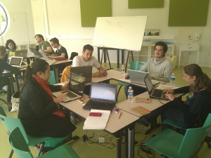
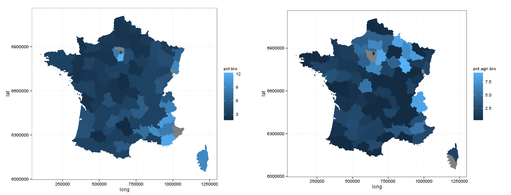
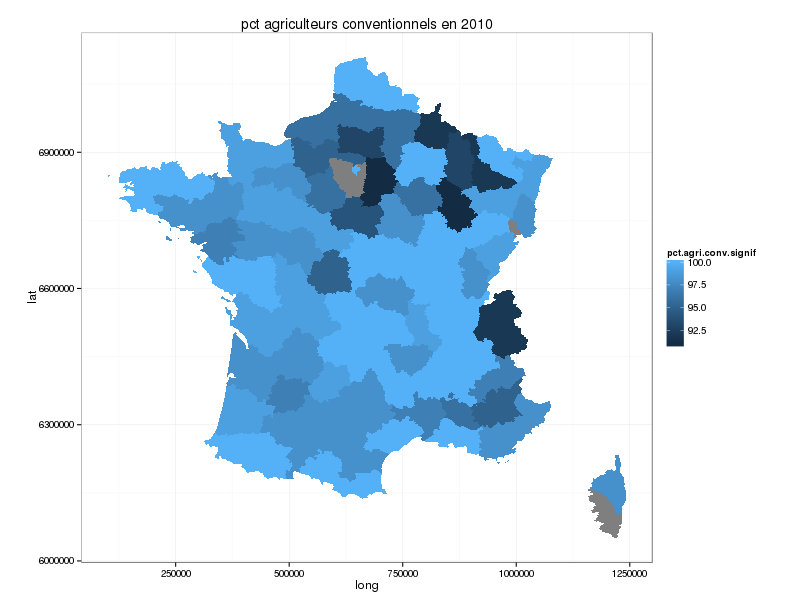
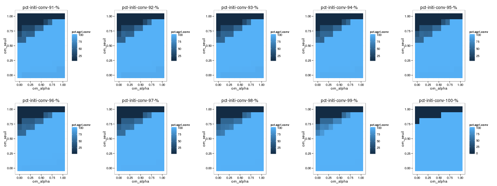
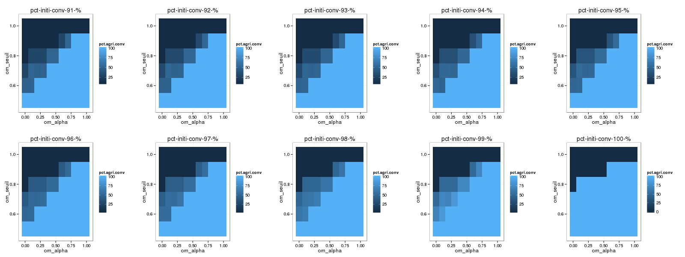
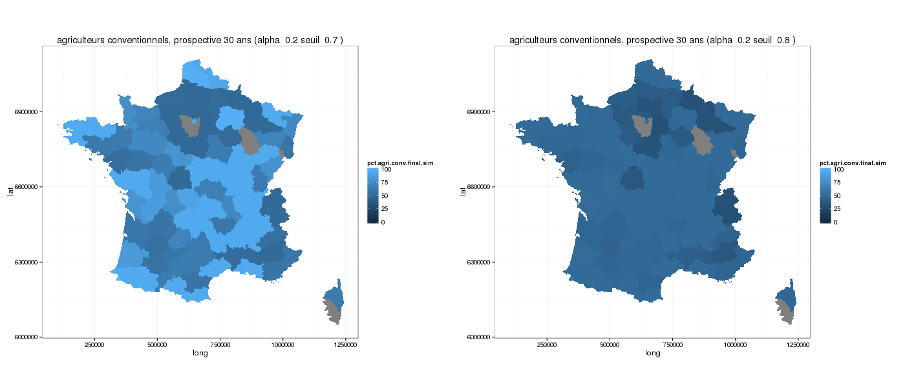

Cohabitation entre agriculture conventionnelle et agriculture biologique
de l'automate cellulaire au territoire
Par Etienne DELAY / laboratoire GEOLAB UMR 6042 CNRS
Sur twitter : @ElCep
Modélisation des Phénomènes Spatiaux / MAPS-6
18 décembre 2013 / MSH-Paris
Introduction
Au commencement il y a ...
Un travail de groupe qui commence lors de MAPS-5 à Oléron en juin 2013
|
 |
Travail sur l'évolution des paysages
Nous voulions tous travailler sur une question autour des paysages, en lien avec l'agriculture
- Notre 1er modèle = caricature de l'opposition Bio VS OGM
- Une question de fond sur le productivisme agricole au regard de la société
Une réponse : la modélisation
“un modèle est une abstraction qui simplifie le système réel étudié [...], pour se focaliser sur les aspects qui intéressent le modélisateur”
P. Coquillard et D.R.C. Hill 1997
“un modèle a pour fonction d'être un instrument de facilitation d'une médiation”
M.S. Morgan et M. Morrison 1999
Prédire ≠ Expliquer
“La théorisation [...] est liée à la possibilité de plonger le réel dans un virtuel imaginaire, doté de propriétés génératives, qui permettent de faire des prévisions”
R. Thom 2009

Le principe
- Un Modèle inspiré des travaux de T. Schelling (1971) sur la ségrégation
- Un automate cellulaire où chaque agent est une cellule
- Où l'on va s'intéresser aux formes de ségrégation spatiale qui peuvent se mettre en place
- Une cellule est un agriculteur
La formalisation
Les interactions entre les cellules seront basées sur une fonction d'utilité
\[ U = r * alpha + s * bêta \]où
- r est le rendement des cellules
- s est la pression sociale
- alpha + bêta = 1
- alpha est plus important que bêta
- bêta est plus important que alpha
|
Pour les conventionnels
|
Pour les bio
|
Les mêmes valeurs sont utilisées de manière croisée
Ce qui donnait par exemple :
Pour faire suite...
Nous avons voulu donner une suite à ce travail, mais l'opposition bio VS OGM n'était pas forcément utilisable. Nous avons donc choisi de nous intéresser à une réalité moins tranchée :
biologique VS conventionnel
Matériels et méthodes
La bio en France, où en est-on ?
Des données en openData pour 2010
 Le script R est en annexe
Ce qui donne en négatif pour l'agriculture conventionnelle ...
La gamme de valeurs pour l'initialisation du modèle sera donc entre 91 et 100
En deux mots ... comment a-t-on procédé ?
- On explore l'autre extrémité des valeurs du modèle...
- Un modèle multi-agents developpé sur Netlogo
- Une analyse de sensibilité avec OPENMOLE sur CALI (CAlcul en LImousin)
- Une exploration des résultats avec R
Et l'analyse de sensibilité ?
- 20 réplications par paramétrage
- Une population initiale d'agriculteurs conventionnels entre 91 et 100% par pas de 0.1
- Un alpha entre 0 et 1 par pas de 0.1
- L'impact des politiques publiques de 0 à 0.2 par 0.1
- Un seuil d'utilité entre 0 et 1 par 0.1
→600 000 simulations
RESULTATS et DISCUSSIONS
Exploration du système
Tout l'espace des paramètres
Exploration du système
La partie supérieure
Exploration du système
Le nombre d'agriculteurs(y) en fonction d'alpha (x) pour différentes valeurs de seuil
Exploration du système
Et si on associe les résultats à la carte ? Juste pour voir !
Quelques explications
- Si α ↑
- On donne beaucoup de poids à l'économie et de moins en moins au social
- De manière générale, on va favoriser les agriculteurs conventionnels
- Si le seuil de la fonction d'utilité ↑
- On augmente l'intolérance des agriculteurs à leurs conditions
- De manière générale, on va favoriser l'agriculture biologique dans des valeurs basses d'α
Et si on introduit des aides ?
entre 0, 10 et 20% des revenus
Et si on introduit des aides ?
Et si on introduit des aides ?
entre 0, 10 et 20% des revenus
- Si les aides ↑, pas de surprise
- on favorise l'installation en bio
- on augmente les situations favorables
- Mais une surprise !
- on nivelle le nombre d'agriculteurs autour d'un équilibre (dynamique?)
Une petie carte ?
Et si on associe les résultats à la carte ? Juste pour voir !
Conclusion
Des conclusions sur le modèle
Si l'objectif est de conserver une coexistence des pratiques
- Il faut qu'il y ait une relative "intolérance" de la part des agriculteurs (seuil > 0.5), sans quoi la situation des agriculteurs biologiques n'est pas tenable
- Le poids de l'économie (α) doit être modéré
Pas de valeur prospective à proprement parler mais...
- ... le modèle nous permet de nous interroger sur la possible coexistence entre les deux pratiques.
- Est-ce que α pourrait être la société ? Et donc représenter les tendances de la construction sociale d'un territoire et l'assouvissement d'un besoin essentiel qu'est se nourrir ?
Une piste à suivre ...
Attribuer une valeur de α par département pour explorer dans le temps les dynamiques spatiales
Un pur produit MAPS ?
Crédit photo : MapBox sur flickrA l'heure du bilan, maps5 a été :
- un espace/temps de rencontre
- un moment d'apprentissage
- une ouverture sur des sujets lointains...
- c'est l'aventure quoi!
Merci de votreattention
Réalisé avec reveal.js Crédit photo : Thomas Misnyovszki on Flick'rAnnexes
script R opendata
#script pour l'article MAPS5 sur l'agriculture biologique
#l'objectif est de pouvoir proposer une carte des départements FR avec des données de la bio
##les données ont été téléchargées sur data.gouv.fr
#les données du RGA http://www.data.gouv.fr/DataSet/551794
#les surfaces en AB http://www.data.gouv.fr/DataSet/30378864
#le nombre de producteurs http://www.data.gouv.fr/DataSet/30378896
#auteur : E.DELAY (GEOLAB université de Limoges)
rm(list=ls())
setwd("~/git/publications/maps5/data/data_bio/")
#lecture des données chargées depuis data.gouv.fr
data_agri_general<-read.csv("Donnees_principales__canton_departements_.csv", head=TRUE, sep=";",quote = '"')
data_exp_bio<-read.csv("departements_Bio.csv", head=TRUE, sep=";",quote = '"')
data_surf_bio<-read.csv("surface_bio_departements.csv", head=TRUE, sep=";")
#on ne peut travailler que sur 2010, seule année en commun, donc il faut découper les données
#data general sur l'agriculture
data_agri_ge2010<-subset(data_agri_general,select=c(Libellé.du.département,X2010, X2010.2))
colnames(data_agri_ge2010)<-c("departement","nb.exploit","surf")
data_agri_ge2010$departement<-as.character(data_agri_ge2010$departement)
data_surf_agri2010<-as.data.frame(rowsum(data_agri_ge2010[,3],group=data_agri_ge2010$departement))
#data sur le nombre d'exploitants en Bio
data_exp_bio2010<-subset(data_exp_bio, Annee==2010,select=c(Annee,id_departement,Departement,Producteurs))
#data sur les surfaces en bio
data_surf_bio2010<-subset(data_surf_bio, Annee==2010)
for(i in c(6:9)){
data_surf_bio2010[,i]<-as.numeric(data_surf_bio2010[,i])
}
data_surf_bio2010$Surf.tot<-data_surf_bio2010[,6] +
data_surf_bio2010[,7] +
data_surf_bio2010[,8] +
data_surf_bio2010[,9]
data_surf_bio2010D<-as.data.frame(as.table(rowsum(data_surf_bio2010[,10],group=data_surf_bio2010$Departement)))
data_surf_bio2010D$Var1<-as.character(data_surf_bio2010D$Var1)
data_surf_bio2010D$Freq<-as.numeric(data_surf_bio2010D$Freq)
table.agri<-NULL
for(i in 1 : length(data_surf_bio2010D[,1])){ #98 valeurs
for(j in 1 : length(data_agri_ge2010[,1])) { #100 valeurs
if(toupper(data_agri_ge2010$departement[j])==data_surf_bio2010D$Var1[i]){
tps<-as.data.frame(c(data_surf_bio2010D[i,], data_agri_ge2010[j,]))
table.agri<-rbind(table.agri, tps)
}
}
}
#reconfigurer le data.frame avec seulement les colonnes à conserver dans l'ordre
table.agri<-table.agri[,c("departement", "nb.exploit", "Freq","surf")]
colnames(table.agri)<-c("departement", "nb.exploit", "surf.bio","surf.tot")
#calcul du pct de terre en Bio
table.agri$pct.bio<- (table.agri$surf.bio * 100) / table.agri$surf.tot
boxplot(table.agri$pct.bio, outline = FALSE)
summary(table.agri$pct.bio)
##ICI on se retrouve avec des valeurs aberrantes pour certains départements... donc
##il faut les supprimer
for (i in 1 : length(table.agri[,1])){
if (table.agri$pct.bio[i]> 15) {
table.agri$pct.bio[i]<-NA
}
}
## la partie qui s'intéresse au nombre de fermes bio par département
for (i in 1 : length(table.agri[,1])){
for (j in 1 : length(data_exp_bio2010[,1])){
if (toupper(table.agri$departement[i])==data_exp_bio2010$Departement[j]){
table.agri$agri.bio[i]<-data_exp_bio2010$Producteurs[j]
}
}
}
#reconfigurer le data.frame avec seulement les colonnes à conserver dans l'ordre
table.agri<-table.agri[,c("departement", "surf.bio","surf.tot","pct.bio","agri.bio","nb.exploit")]
table.agri$pct.agri.bio<- (table.agri$agri.bio * 100) / table.agri$nb.exploit
summary(table.agri$pct.agri.bio) #le dernier decile est autour de 10%
boxplot(table.agri$pct.agri.bio, outline = FALSE)
#il faut là encore supprimer les valeurs abusives
for (i in 1 : length(table.agri[,1])){
if (table.agri$pct.agri.bio[i]> 10) {
table.agri$pct.agri.bio[i]<-NA
}
}
##Maintenant on veut faire une belle carte avec les départements français!
#chargement des librairies
library("rgdal")
library("maptools")
library("ggplot2")
library("plyr")
library("grid")##librairie pour arranger les graphes les uns à coté des autres avec ggplot
#chargement du shapeFile
dep_shp<-readOGR(dsn="/home/delaye/git/publications/maps5/data/shp_dep/", layer="departement_geofla")
dep_shp@data$NOM_DEPT<-as.character(dep_shp@data$NOM_DEPT)
##A la sortie de la boucle j'ai les pct de bio dans le shp
for (i in 1 : length(table.agri[,1])){
for (j in 1 : length(dep_shp@data$NOM_DEPT)){
if (toupper(table.agri$departement[i])==dep_shp@data$NOM_DEPT[j]){
dep_shp@data$pct.bio[j]<-table.agri$pct.bio[i]
dep_shp@data$pct.agri.bio[j]<-table.agri$pct.agri.bio[i]
}
}
}
##let's go for ggplot2
dep_shp@data$id<-rownames(dep_shp@data)
dep_shp.point<-fortify(dep_shp,region="id")
dep_shp.df<-join(dep_shp.point, dep_shp@data, by="id")
write.csv(dep_shp.df, "dep_shp_df.csv")
p<-ggplot()+
geom_polygon(data=dep_shp.df, aes(x=long,y=lat,group=group,fill=pct.bio))+
theme_bw()+
coord_equal()
q<-ggplot()+
geom_polygon(data=dep_shp.df, aes(x=long,y=lat,group=group,fill=pct.agri.bio))+
theme_bw()+
coord_equal()
vplayout <- function(x, y) viewport(layout.pos.row = x, layout.pos.col = y)
grid.newpage()
pushViewport(viewport(layout = grid.layout(1, 2)))
print(p, vp = vplayout(1, 1))
print(q, vp = vplayout(1, 2))
# q
# q